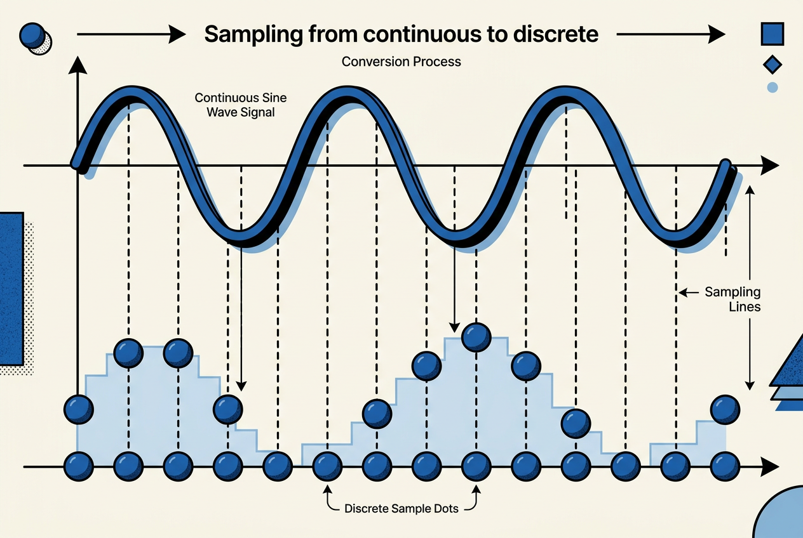
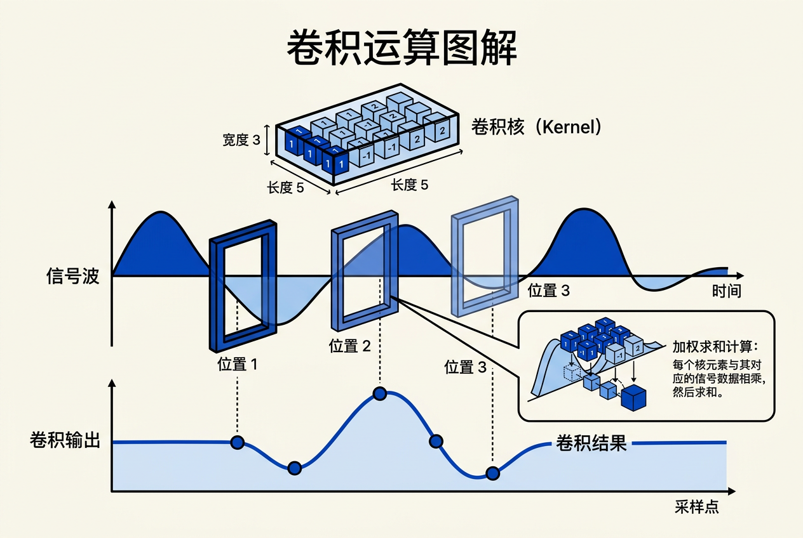
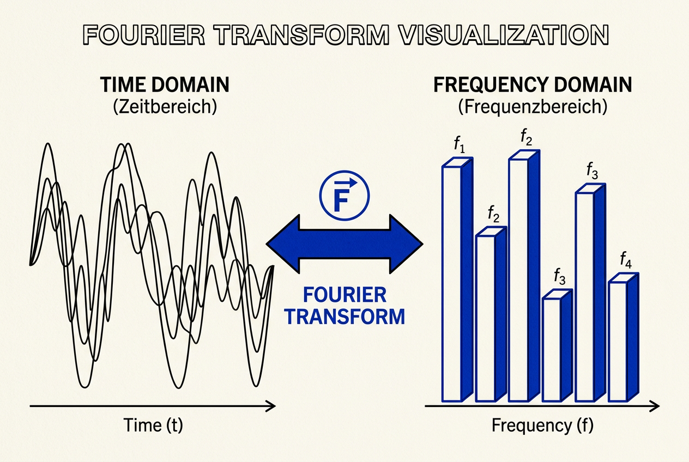
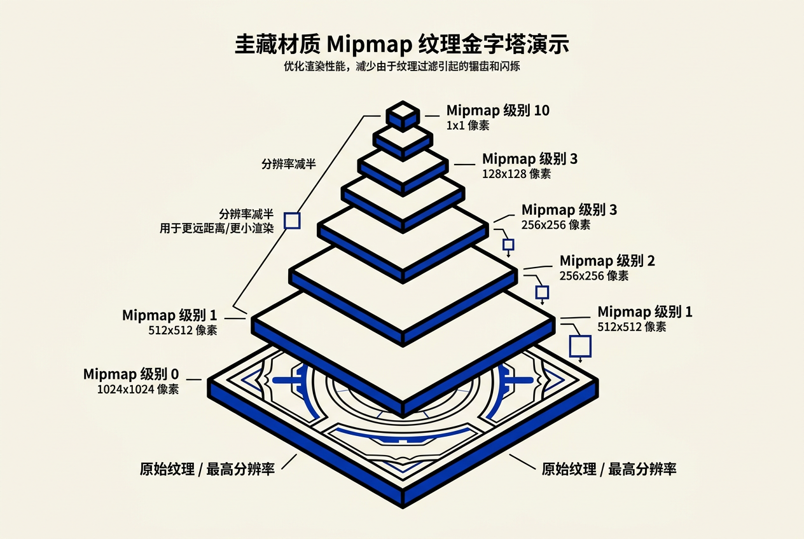

第10章：信号处理 — 零基础讲义
讲义说明
本讲义基于 Steve Marschner & Peter Shirley 所著《虎书5》第5版第10章（p.205-252）。
本章是图形学的"数学骨架"——它解释为什么"采样率太低"会让远处物体消失、为什么"纹理过滤"能消除锯齿、为什么"mipmap"是 GPU 的标配。
学完本章你将理解抗锯齿、纹理过滤、傅里叶变换等核心概念。
本版插画采用 Guizang 材质插画风格重新绘制。
学习目标
- 理解采样和混叠——连续信号变成离散信号的核心问题
- 掌握卷积——图形学最核心的数学运算
- 理解常用卷积滤波器：box、tent、Gaussian、B-spline
- 掌握可分离滤波器——2D 卷积的高效实现
- 理解采样理论：Nyquist 定理、抗混叠、重采样
- 理解傅里叶变换——频域的"魔法"
- 掌握 mipmap 和各向异性过滤的原理
10.1 数字音频：1D 采样入门
10.1.1 采样流程
为什么先讲音频？ 音频信号是 1D 的（时间→振幅），比 2D 图像简单得多。所有图像处理的核心概念（采样、混叠、滤波）都可以先在 1D 音频中理解，再推广到 2D。

数字音频流程：
麦克风 → 连续电压信号 → A/D 转换器（采样）→ 离散数字存储 → D/A 转换器（重建）→ 扬声器A/D 转换器（Analog-to-Digital）：把连续电压变成离散数字。采样率（每秒采样次数）决定"能录多高的频率"。
D/A 转换器（Digital-to-Analog）：把离散数字变回连续电压。输出是"阶梯形"——需要低通滤波器平滑。
| 组件 | 输入 | 输出 | 关键问题 |
|---|---|---|---|
| 麦克风 | 声波（空气振动） | 连续电压 | 频率响应范围 |
| A/D 转换器 | 连续电压 | 离散数字（每秒 f_s 个样本） | 采样率 f_s 是多少？ |
| D/A 转换器 | 离散数字 | 连续电压（阶梯形） | 需要平滑滤波 |
采样率多少才够？ 人耳能听到的最高频率约 20 KHz。根据奈奎斯特定理，采样率必须 > 2 × 最高频率 = 40 KHz。CD 标准的 44.1 KHz 就是基于这个——留了一些余量。
核心洞察：采样前用低通滤波器去掉高于奈奎斯特频率的成分（防混叠）；采样后用低通滤波器平滑阶梯形输出（重建）。两个滤波器缺一不可。
10.1.2 混叠（Aliasing）

混叠 = "高频信号假装成低频信号"
经典例子：
- 钟表以 8 KHz 录音后听起来是 6 KHz 的"钟"——因为 8 KHz 以上的频率被"折叠"到低频
- 电影中车轮"倒转"效应——车轮旋转频率超过帧率时，看起来像在反转
- 摩尔纹（Moiré pattern）——细密的网格图案在屏幕上出现奇怪的波纹
混叠的根本原因：
原始信号频率 f，采样率 f_s
如果 f > f_s / 2（奈奎斯特频率），高频部分会被"折叠"到 [0, f_s/2] 范围内
// 数值例子
f_s = 100 Hz（每秒采 100 个样本）
奈奎斯特频率 = 50 Hz
// 情况 1：f = 30 Hz（低于奈奎斯特频率）→ 正确采样
30 Hz 的正弦波被正确记录
// 情况 2：f = 80 Hz（高于奈奎斯特频率）→ 发生混叠
80 Hz 的正弦波被采样后"伪装"成 20 Hz
因为：采样得到的离散点恰好和 20 Hz 的波一样！
80 Hz - 100 Hz = -20 Hz → 绝对值 = 20 Hz数学解释：
人耳最高听到约 20 KHz。44.1 > 2×20 = 40，技术上已足够。44.1 这个数字的由来很"历史"——Sony 和 Philips 在制定 CD 标准时，选择了一个既能兼容 PAL/NTSC 视频信号又留有余量的数值。实际上 48 KHz（专业音频标准）也常用。
10.2 卷积（Convolution）
10.2.1 卷积的定义
为什么卷积是图形学最重要的运算？ 任何形式的滤波（模糊、锐化、边缘检测）、采样、重建本质上都是卷积。理解卷积 = 理解信号处理的一半。
生活类比：煮汤
做一锅汤，你不断加调料。每次加调料的影响会"扩散"到之后的汤里——加得越久，扩散得越广。最终的汤味 = 每次加料量 × 该料随时间扩散的函数 的累加。这就是卷积！
离散卷积公式：
连续卷积公式：
公式拆解（离散版）：
| 符号 | 含义 | 类比 |
|---|---|---|
| a | 输入信号（要处理的数组） | 食材清单 |
| b | 滤波器（卷积核） | 调料"扩散"函数 |
| i | 输出位置 | 尝汤的时间点 |
| j | 遍历所有位置 | 回顾所有加料时间 |
| b[i-j] | 位置 j 的输入对位置 i 的贡献权重 | j 时刻加的料在 i 时刻还剩多少 |
10.2.2 移动平均 = 卷积的最简形式
如果看不懂公式，先看这个：
移动平均：对附近 N 个值求平均，这就是卷积：
这就是 box 滤波器的卷积形式——每个输出点是对称窗口内输入点的等权平均。
数值例子：
输入信号 a = [1, 4, 2, 6, 3, 5]
滤波器 b = [1/3, 1/3, 1/3]（半径 r=1 的 box 滤波器）
c[1] = a[0]×b[1] + a[1]×b[0] + a[2]×b[-1]
// 等等，索引有点绕。用 i=1 代入公式 (a*b)[i]=Σⱼa[j]·b[i-j]
c[1] = a[0]×b[1] + a[1]×b[0] + a[2]×b[-1]
// b 的索引从 0 开始，所以 b[-1] 不存在
// 简化方式：输出 c[1] = a[0]×1/3 + a[1]×1/3 + a[2]×1/3
= 1/3 + 4/3 + 2/3 = 7/3 ≈ 2.33
c[2] = a[1]×1/3 + a[2]×1/3 + a[3]×1/3
= 4/3 + 2/3 + 6/3 = 12/3 = 4.0
c[3] = a[2]×1/3 + a[3]×1/3 + a[4]×1/3
= 2/3 + 6/3 + 3/3 = 11/3 ≈ 3.67
// 输出：c = [?, 2.33, 4.0, 3.67, ?, ?]
// 边缘处的 ? 需要"边界处理"（见 10.6.3）10.2.3 卷积 = "滤波器翻转 + 滑动加权"
视角 1（从输出看）：c[i] = "用滤波器 b 对 a 在 i 处求加权平均"
- 在每个输出位置 i 处"放置"滤波器
- 滤波器覆盖的输入值乘上对应的滤波器权重
- 求和得到输出
视角 2（从输入看）：(a * b) = "把 b 复制多份，按 a 的值加权后叠加"
- 每个输入值 a[j] 在输出中"扩散"成滤波器的形状
- 所有扩散结果叠加
- GPU 实际用的是这个视角（多个采样求和）

10.2.4 卷积的关键性质
| 性质 | 公式 | 物理意义 | 为什么重要 |
|---|---|---|---|
| 交换律 | a * b = b * a | 滤波器和信号可互换 | 可以选择更容易实现的一方 |
| 结合律 | (a * b) * c = a * (b * c) | 可分步滤波 | 多个滤波器可以合并为一个 |
| 分配律 | (a + b) * c = a*c + b*c | 线性性质 | 可以分开处理再合并 |
| 恒等元 | a * δ = a | δ = 单位脉冲（一个 1 其余 0） | 卷积的"零" |
// 为什么交换律很重要？
// 如果你有两个滤波器，一个简单一个复杂
// 可以先卷简单的，再卷复杂的 = 先卷复杂的，再卷简单的
// 选择计算量小的顺序！
// 为什么结合律很重要？
// 高斯模糊 = box * box * box * box （4次box近似高斯）
// 结合律允许先合并为一个大滤波器：gaussian_approx = box * box * box * box
// 然后一次卷积搞定：result = image * gaussian_approx10.2.4b 卷积的数值计算示例（完整手算）
为了彻底理解卷积，让我们手算一个完整例子：
// 输入信号 a = [0, 1, 0, 1, 0, 1, 0, 1]（交替 0/1 信号）
// 滤波器 b = [0.25, 0.5, 0.25]（三角形权重，r=1）
// 输出 c = a * b
// 手算每个输出位置（假设零填充边界）：
c[0] = a[-1]×0 + a[0]×0.5 + a[1]×0.25
= 0 + 1×0.5 + 0×0.25 = 0.5
c[1] = a[0]×0.25 + a[1]×0.5 + a[2]×0.25
= 0×0.25 + 1×0.5 + 0×0.25 = 0.5
c[2] = a[1]×0.25 + a[2]×0.5 + a[3]×0.25
= 1×0.25 + 0×0.5 + 1×0.25 = 0.5
c[3] = a[2]×0.25 + a[3]×0.5 + a[4]×0.25
= 0×0.25 + 1×0.5 + 0×0.25 = 0.5
// ... 实际上全部输出都是 0.5！
// 因为"交替 0/1"的高频信号被滤波器完全"抹平"了
// 这证明了：滤波 = 低频通过（低通滤波）
// 如果改用更宽的滤波器 b = [0.2, 0.2, 0.2, 0.2, 0.2]（r=2）：
c[2] = 1×0.2 + 0×0.2 + 1×0.2 + 0×0.2 + 1×0.2 = 0.6
// 稍微高了一点的 0.6 — 还是被抹平了，因为滤波器比信号周期宽
// 结论：滤波器越宽，抹平效果越强（频率越低）10.2.5 离散-连续卷积（混合域）
图形学中最常用的卷积形式——一边是离散采样，一边是连续函数：
这就是图形学中重采样（resampling）的核心公式：
- a[i]：离散的像素值/纹理值
- f(x)：连续的滤波器函数
- (a * f)(x)：重建出的连续信号在 x 处的值
生活类比：你在听 CD（离散样本），但耳朵需要连续的声音（连续信号）。播放器的 D/A 转换器就是用"卷积"把离散样本变回连续波形。
10.3 卷积滤波器
10.3.1 滤波器的本质
滤波器 = 一个"小函数"，它的形状决定了"什么频率的信号被保留/抑制"。
关键权衡：
滤波器越平滑 → 越能消除高频混叠 → 但输出越模糊
滤波器越锐利 → 细节保留越好 → 但越容易产生混叠和振铃
10.3.2 常用滤波器对比
| 滤波器 | 形状 | 表达式 | 特点 | 自然半径 | 主要用途 |
|---|---|---|---|---|---|
| Box | □ 方波 | 1 if |x|<0.5 else 0 | 最简单，但有振铃 | 1/2 | 最快的滤波，预览 |
| Tent | △ 三角形 | 1-|x| if |x|<1 else 0 | 比 box 平滑 | 1 | 中等质量，双线性插值 |
| Gaussian | ∩ 钟形 | exp(-x²/(2σ²)) | 最平滑，无振铃 | 无固定（σ 控制） | 高质量模糊 |
| B-spline | ⌒ 立方多项式 | 分段三次多项式 | 比 Gaussian 还平滑 | 2 | 高质量重采样 |
数值例子：不同滤波器对同一信号的卷积效果
输入信号 a = [0, 1, 2, 3, 4, 5, 6, 7, 8, 9]
位置 i=5 处的输出：
// Box 滤波器（半径 r=1）：等权平均
c_box[5] = (a[4] + a[5] + a[6]) / 3 = (4 + 5 + 6) / 3 = 5.0
// Tent 滤波器（半径 r=1）：线性衰减权重
c_tent[5] = a[4]×0.5 + a[5]×1.0 + a[6]×0.5
= 2.0 + 5.0 + 3.0 = 10.0 → 归一化：10 / 2 = 5.0
// 注意：Tent 的权重和是 2（0.5+1.0+0.5），需要归一化
// Gaussian 滤波器（σ=1，半径 r=2）
权重: w[3]=exp(-4/2)=0.135, w[4]=exp(-1/2)=0.607, w[5]=exp(0)=1.0
w[6]=0.607, w[7]=0.135
c_gauss[5] = (3×0.135 + 4×0.607 + 5×1.0 + 6×0.607 + 7×0.135)
/ (0.135 + 0.607 + 1.0 + 0.607 + 0.135)
= (0.405 + 2.428 + 5.0 + 3.642 + 0.945) / 2.484
= 12.42 / 2.484 ≈ 5.0
// 对于线性信号，所有滤波器输出相同（因为信号本身是线性的）
// 对于非线性的真实图像，不同滤波器的效果差异会非常明显10.3.3 关键概念
1. 积分 = 1 的归一化：
如果滤波器积分不是 1，它会改变信号的整体亮度（图像变亮或变暗）。
2. 连续滤波器 vs 离散滤波器：
| 类型 | 优点 | 缺点 |
|---|---|---|
| 离散滤波器 | 有限个值，精确控制，快速 | 精度受分辨率限制 |
| 连续滤波器 | 任意形状，无限精度 | 计算需要积分/采样 |
3. 插值滤波器：f(0) = 1, f(i) = 0（对所有非零整数 i）。重建后的函数精确通过样本点。
4. 纹波自由（ripple-free）：滤波器在所有整数偏移处累加 = 1。对常数信号无影响。
Box 滤波器在频域是 sinc 函数（sin(πω)/πω）。sinc 有"副瓣"（side lobes）——在截止频率之外还有振荡。这些副瓣会让某些频率成分被错误地保留或抑制，在图像上表现为"振铃"（ringing artifact）。越平滑的滤波器（如 Gaussian）副瓣越小。
10.3.4 2D 滤波器与可分离性
问题：图像是 2D 的，2D 卷积复杂度是 O(r² × N²)，太大！
解决：如果滤波器是可分离的，就能分解成两次 1D 卷积：
先卷积行，再卷积列：
// 不可分离的 2D 卷积：O(r² × N²)
for each pixel (i, j):
for each offset (di, dj) in [-r, r]²:
sum += a[i+di][j+dj] * b_2d[di][dj]
// 可分离的 2D 卷积：O(r × N²) —— 快多了！
// 先对每行做 1D 卷积
for each row j:
temp[i][j] = Σ a[i+di][j] * b_1d[di]
// 再对每列做 1D 卷积
for each column i:
result[i][j] = Σ temp[i][j+dj] * b_1d[dj]
// 性能对比：半径 r=10
// 不可分离：每个像素需要 (2×10+1)² = 441 次乘加
// 可分离：每个像素只需要 2×(2×10+1) = 42 次乘加
// 加速比：441/42 ≈ 10.5 倍！只有 Gaussian 同时是"可分离"和"径向对称"的：
这让 Gaussian 在 2D 图像处理中最高效——一次处理行，一次处理列，效果完全等价于 2D 高斯模糊。
10.3.5 滤波器的实际选择指南
在实际图形学应用中，如何选择合适的滤波器？以下是实用建议：
| 场景 | 推荐滤波器 | 理由 |
|---|---|---|
| 纹理采样（最近邻） | Box | 速度最快，像素风格效果 |
| 纹理采样（双线性） | Tent | 速度与质量平衡，硬件直接支持 |
| 高质量模糊 | Gaussian | 最平滑，无振铃 |
| 图像放大（上采样） | B-spline / Mitchell | 比双线性更平滑，不会产生方块感 |
| 图像缩小（下采样） | Gaussian + 降采样 | 预模糊后再采样，抗混叠效果好 |
| 抗锯齿（采样前） | Gaussian | 频域衰减快，混叠抑制好 |
| 光线追踪重建 | Gaussian / Mitchell | 平衡锐度和平滑 |
- 速度 vs 质量：Box → Tent → B-spline → Gaussian（越来越慢，但质量越来越高）
- 锐度 vs 平滑：Gaussian → B-spline → Tent → Box（Box 最锐但也最容易混叠）
- 频域特性：Gaussian → B-spline → Tent → Box（Gaussian 的频域最干净）
10.4 图像的信号处理
10.4.1 图像滤波的应用
1. 模糊（Blur）：
// box 模糊 → 块状效果，有锯齿
// tent 模糊 → 中等平滑
// Gaussian 模糊 → 自然平滑（最常用）2. 锐化（Sharpening）：
先做模糊，再从原图减去模糊结果得到"高频细节"，再加回原图。α 控制锐化强度。
3. 软阴影（Soft Drop Shadow）：
先把原图偏移（模拟阴影偏移），再做高斯模糊（让阴影边缘柔和）。
4. 抗混叠（Antialiasing）：
// 先模糊再采样 = 抗混叠的本质
anti_aliased = downsample(blur(image, kernel_size))10.4.2 图像混叠
图像混叠 = "采样率不足以表达图像"
两种典型表现：
| 现象 | 原因 | 例子 |
|---|---|---|
| Moiré 图案 | 周期纹理和采样网格"打架" | 细条纹衬衫在屏幕上出现彩色波纹 |
| 锯齿（Jaggies） | 高频边缘被离散化成"楼梯"形 | 斜线看起来像阶梯 |
解决方案：在采样前用低通滤波器（抗混叠）去掉高于奈奎斯特频率的高频成分。
10.4.3 重采样（Resampling）
重采样 = 改变图像的分辨率（放大/缩小）
两步法：
- 重建：用连续滤波器把离散样本变成连续函数
- 采样：在新网格上采样这个连续函数
"采样间距"决定滤波器大小：
- 下采样（缩小）：滤波器应基于输出间距——需要更大的滤波器来避免混叠
- 上采样（放大）：滤波器应基于输入间距——只需平滑插值
// 可分离重采样——先处理所有行，再处理所有列
// 把 2D 重采样变成 2 次 1D 重采样，效率极高
function resample(image, new_width, new_height):
// 第一步：水平方向重采样
temp = new Image(new_width, image.height)
for each pixel (x, y) in temp:
temp[x][y] = sample_1d(image, x, y, direction="horizontal")
// 第二步：垂直方向重采样
result = new Image(new_width, new_height)
for each pixel (x, y) in result:
result[x][y] = sample_1d(temp, x, y, direction="vertical")
return result这就是"像素丢弃"（pixel dropping）——扔掉不需要的像素。速度最快，但会产生严重的锯齿。仅用于预览或缩略图。正确做法是：先做低通滤波（模糊）再采样，即抗混叠。
10.5 采样理论
10.5.1 傅里叶变换（Fourier Transform）

核心思想：任何函数都可以表示为不同频率正弦波的叠加
公式拆解：
| 符号 | 含义 | 直觉 |
|---|---|---|
| f(x) | 时域信号 | 随时间变化的信号值 |
| f̂(ω) | 傅里叶变换（频域） | 频率 ω 处的"成分"强度 |
| ω | 频率 | 每秒振荡次数 |
| e^{2πiωx} | 复正弦波 | 频率为 ω 的"纯净"正弦波 |
生活类比：食谱
一道菜（时域信号 f）可以用"配方"（频域 f̂）来描述——面粉多少克（低频成分）、盐多少克（中频）、辣椒多少克（高频）。傅里叶变换就是从"成品菜"反推出"配方"。
10.5.2 傅里叶变换的关键性质
| 性质 | 公式 | 含义 |
|---|---|---|
| 能量守恒 | ∫|f(x)|²dx = ∫|f̂(ω)|²dω | 时域和频域的能量总和相等 |
| 卷积定理 | F{f*g} = f̂·ĝ | 时域卷积 = 频域乘法 |
| 对偶性 | F{f·g} = f̂*ĝ | 时域乘法 = 频域卷积 |
10.5.3 傅里叶变换的"画廊"
不同函数在时域和频域的对应关系：
| 时域函数 | 时域形状 | 频域函数 | 频域形状 |
|---|---|---|---|
| Box | 方波 | sinc（sin(πω)/πω） | 振荡衰减，有副瓣 |
| Tent | 三角形 | sinc² | 比 sinc 平滑，副瓣更小 |
| Gaussian | 钟形 | 还是 Gaussian！ | 指数衰减，无副瓣 |
| B-spline | 平滑多项式 | sinc⁴ | 更平滑，副瓣极小 |
| δ（脉冲） | 单根竖线 | 常数（所有频率等强） | 水平直线 |
// 为什么 Gaussian 的傅里叶变换还是 Gaussian？
// 这是数学上的一个巧妙的巧合（固定点性质）
// 这意味着 Gaussian 在时域和频域都是"最平滑"的——
// 没有副瓣（sinc 的问题），没有振铃（box 的问题）
// 方波 → sinc 的直观理解：
// 一个"方"的脉冲包含了很多高频成分（突然跳变）
// 所以频域中除了主瓣还有副瓣——"振铃"的来源10.5.4 采样和混叠（频域视角）
采样在频域中是什么？ 乘法变卷积：
这意味着：
// 采样在频域中的效果：复制+平移
// 原始频谱 f̂(ω) 被"复制"了无数份，每份中心在 k×f_s 处（k 为整数）
// 如果原始信号的最高频率 f_max < f_s/2：
f̂(ω) ŝ_T(ω) 结果
____ | | | ____ ____ ____
/ \ | | | → / \/ \/ \
/ \ | | | / \/ ^ \/ \
原始频谱 采样脉冲 复制频谱不重叠 → 可恢复！
// 如果原始信号的最高频率 f_max > f_s/2：
f̂(ω) ŝ_T(ω) 结果 = 混叠！
__/\__ | | | __/\__/\__/\__
/ \ | | | → / \ / \ / \
/ \ | | | / \/ {} \/ \
太宽的频谱 ↑ 重叠部分 = 混叠！10.5.5 理想滤波器 vs 实用滤波器
理想滤波器 = sinc 函数：
- 频域是完美的 box（截止频率 f_c 之外全为 0）
- 时域无限延伸（从 -∞ 到 +∞）——不实用！
实用滤波器（box、tent、Gaussian、B-spline）：
- 都是有限支撑（在有限范围内≠0，之外=0）
- 频域有泄漏（不能完全截止高频）
- 但实际可计算
| 滤波器 | 时域支撑 | 频域泄漏 | 混叠抑制 | 模糊程度 |
|---|---|---|---|---|
| 理想 sinc | 无限（不实用） | 无 | 完美 | 无 |
| Box | 有限（1） | 大（副瓣多） | 差 | 轻微 |
| Tent | 有限（2） | 中等 | 中等 | 中等 |
| Gaussian | 近似有限（3σ） | 极小（指数衰减） | 好 | 明显 |
| B-spline | 有限（4） | 极小 | 好 | 明显 |
10.6 实用考虑
10.6.1 Mipmap = "纹理的金字塔"

为什么需要 mipmap？
- 远处的物体在屏幕上只占几个像素
- 用高分辨率纹理采样 → 浪费计算和内存
- 用低分辨率版本 → 够用且快
Mipmap 层级：
M0: 1024 × 1024（原始纹理，最精细）
M1: 512 × 512（1/2 宽高，1/4 像素数）
M2: 256 × 256
M3: 128 × 128
...
M10: 1 × 1（单个像素）选择规则：根据屏幕投影大小选择 mipmap 层级。
// 数值例子
// 一个纹理在屏幕上占 200 像素宽，纹理本身 1024 像素宽
// 层级 = log₂(1024 / 200) = log₂(5.12) ≈ 2.36
// → 在 M2（256²）和 M3（128²）之间插值（三线性过滤）
// 如果只占 2 个像素：
// 层级 = log₂(1024 / 2) = log₂(512) = 9
// → 直接用 M9（2²=4像素? 不对，M9=1024/2⁹≈2，所以是 2×2 版本）10.6.2 各向异性过滤（Anisotropic Filtering）
问题：远处倾斜的表面在屏幕上投影成"长方形"——水平方向和垂直方向需要的采样密度不同。
- 水平方向需要更多采样（纹理压缩得更严重的一个方向）
- 垂直方向需要更少采样
各向异性 = "在水平/垂直方向用不同大小的滤波器"
实现：从 mipmap 中采样多个点，沿倾斜方向做非均匀采样。
// 各向异性过滤采样模式
// 从 mipmap 沿椭圆形区域采样多个点并加权平均
anisotropic_samples = 4 // 采样点数（质量参数）
for i = 0 to anisotropic_samples:
offset = compute_anisotropic_offset(i, anisotropic_samples)
color += sample_mipmap(uv + offset, mip_level)
color /= anisotropic_samples10.6.3 边界处理
问题：滤波时，图像边缘的滤波器会"伸出"图像边界——外面的像素是什么？
| 方法 | 规则 | 适用场景 |
|---|---|---|
| 零填充 | 超出边界的像素 = 0 | 科学计算，纯学术 |
| 夹紧（Clamp） | 超出边界的像素 = 边界像素值 | 大多数图像处理（现代 GPU 默认模式） |
| 环绕（Wrap） | 超出边界的像素 = 对侧像素 | 无缝纹理（可平铺的贴图） |
// 以 1D 信号 [1, 4, 2, 6, 3] 为例，半径 r=1 的 box 滤波器
// 在 i=0 处卷积：
// 零填充：c[0] = (0 + 1 + 4) / 3 = 1.67
// 夹紧：c[0] = (1 + 1 + 4) / 3 = 2.0
// 环绕：c[0] = (3 + 1 + 4) / 3 = 2.67
// 三种方式在 i=2（中间）处输出相同：c[2] = (4 + 2 + 6) / 3 = 4.0
// 差异只在边缘出现全章总结
核心洞察：信号处理是图形学的"数学骨架"——
- 卷积 = 滤波（平滑/锐化/阴影/抗锯齿）
- 采样定理：奈奎斯特频率 = 采样率 / 2
- 混叠：高频信号"假装"成低频信号
- 抗混叠：采样前必须用低通滤波器
- 可分离卷积：2D 滤波器 = 两次 1D 滤波器
- 傅里叶变换：把卷积变成乘法
- mipmap：远距离物体的"金字塔"采样
关键公式速查：
| 公式 | 表达式 |
|---|---|
| 离散卷积 | (a * b)[i] = Σⱼ a[j]·b[i-j] |
| 连续卷积 | (f * g)(x) = ∫ f(t)·g(x-t) dt |
| 傅里叶变换 | f̂(ω) = ∫ f(x)·e^{-2πiωx} dx |
| 奈奎斯特定理 | f_max < f_sampling / 2 |
| 可分离 Gaussian | G₂(x,y) = G₁(x)·G₁(y) |
| 卷积定理 | F{f*g} = f̂·ĝ |
一步到位：连续信号 → 采样（奈奎斯特定理约束） → 离散表示 → 卷积滤波 → 重建 → 连续输出。图形学中处处是这个过程。
下一步：第11章将讲解纹理映射——把图像"贴"到 3D 物体表面。配合本章的卷积和采样理论，你将真正理解 mipmap、各向异性过滤等核心概念。